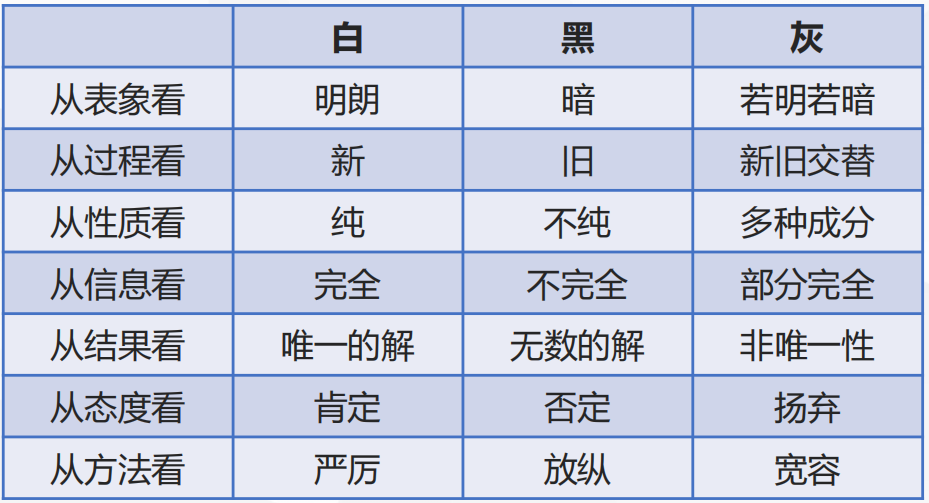
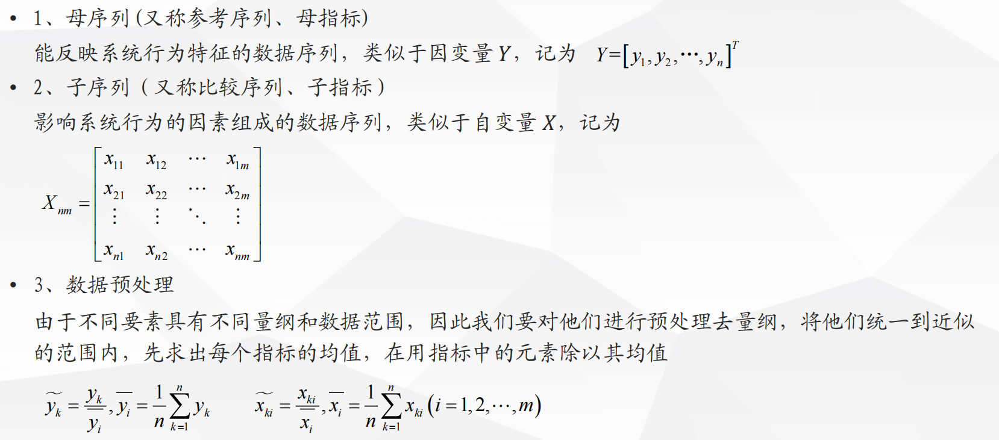
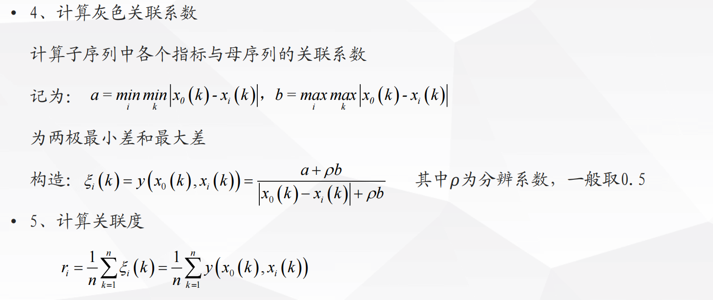

GRA
灰色关联分析
模型原理
模型引出
灰色系统
灰色系统理论:用颜色深浅反映信息量的多少,黑色信息量太少,白色充足,灰色信息不完全

关联分析
系统分析因素,回答的问题是某个包含多种因素的系统中,哪些因素是主要的,哪些是主要的,哪些是次要的;哪些明显,哪些潜在等等.
现有因素分析的量化方法,大都是数理统计法如回归分析、方差分析、主要成分分析等,这些方法都具有如下弱点
- 要求大量数据
- 要求分布是典型的
- 计算工作量大
- 有可能出现反常情况
灰色关联分析
- 灰色关联分析是一种多因素统计分析方法.弥补了采用数理统计方法作系统分析所导致的缺憾.它对样本量的多少和样本有无规律同样适用,而且计算量小,十分方便,更不会出现量化结果与定性结果分析不符的情况.
- 基本思想:根据序列曲线集合形状的相似程度来判断其联系是否紧密.曲线越接近,相应序列中间的关联度就越大,反之就越小.
- 对一个抽象的系统或者现象进行分析,首先要选准反映系统行为特征的数据序列,称为找系统行为的映射量,用映射量来间接地表征系统行为.有了系统行为特征数据和相关因素的数据,即可作出各个序列的图形,从直观上进行分析.
关联分析的基本步骤


评价决策问题中的应用
- 数据正向化处理
- 正向化后数据预处理
构造母序列:列向量取每一行的最大值
评价决策问题中没有明显的母序列,需要自己构造
计算关联系数
- 计算指标权重
对关联度进行归一化
本博客所有文章除特别声明外，均采用 CC BY-NC-SA 4.0 许可协议。转载请注明来源 PlutoC！